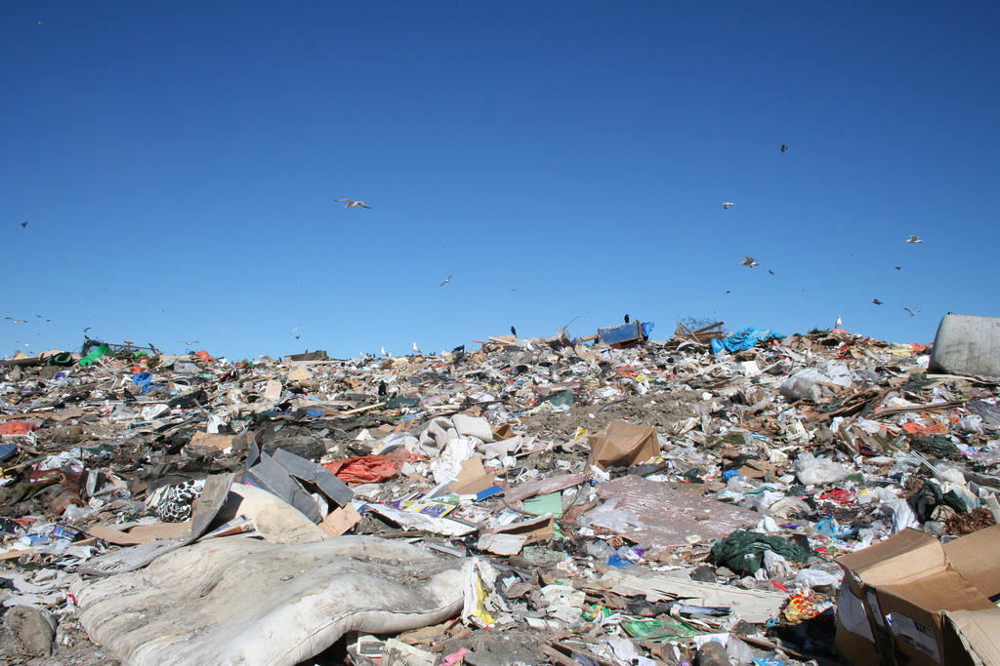

Nowadays
Today roughly 3,000 catadores work on the landfill (although only 1,752 are officially registered) removing 200 tons of recyclable materials each day. They have extended the life of the landfill by removing materials that would have otherwise been buried and have contributed to the landfill having one of the highest recycling rates in the world.

Curiosities
- It is one of the largest landfills in the world, probably in the top 10
- It closed in 2012, but there are still people that depend of it to survive